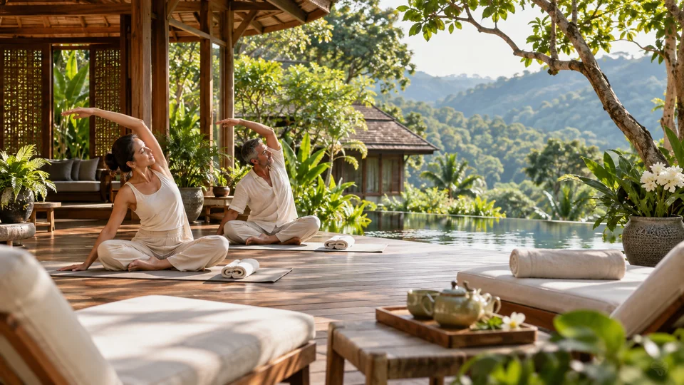
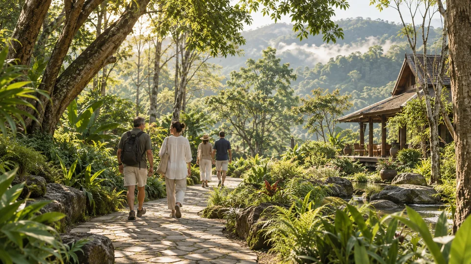
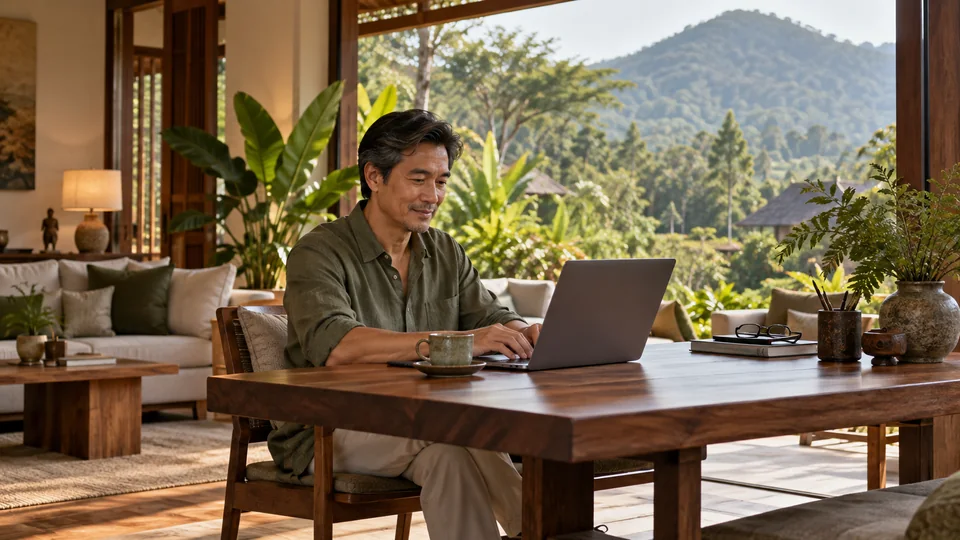
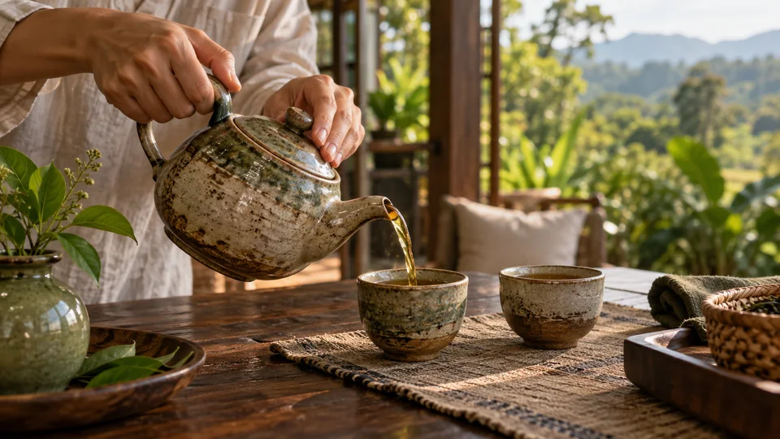
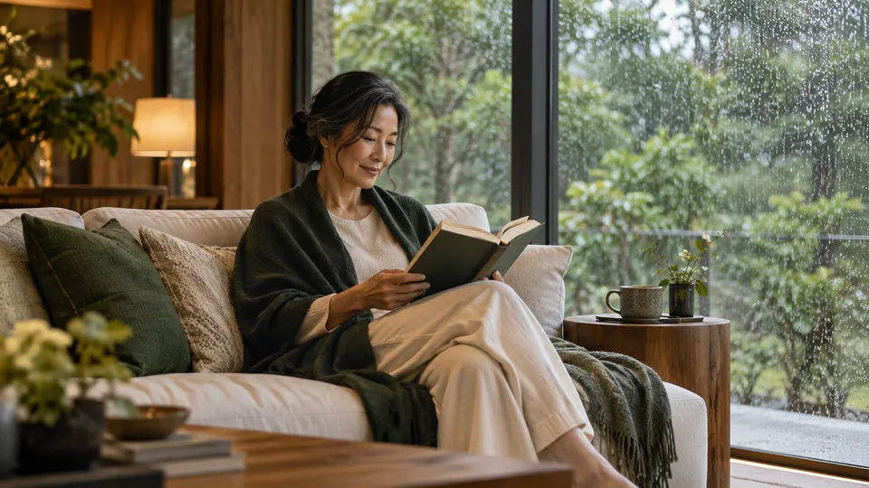

01 / FOOD & TEA
먹거리와 차
한 잔의 차로 여는 아침.
정원 곁의 식탁에 앉아 음식과 차를 천천히 즐기는 하루를 그립니다. 혼자 여는 아침에도, 사람들과 나누는 한 끼에도 나의 속도를 담아보세요.

BUSINESS VALLEY / CHIANG MAI
치앙마이의 휴가와 일상함께 자유롭게 만나고.
소통하고 협력하고.
도모하고. 스타트 업!
01 / EVERYDAY EXPERIENCES
경험을 선택해 자세히 둘러보세요.
01 / FOOD & TEA
한 잔의 차로 여는 아침.
정원 곁의 식탁에 앉아 음식과 차를 천천히 즐기는 하루를 그립니다. 혼자 여는 아침에도, 사람들과 나누는 한 끼에도 나의 속도를 담아보세요.

02 / LOCAL MARKETS
오늘의 식탁과 내 취향을 발견하는 시간.
제철 재료와 작은 수공예품, 마음에 드는 물건을 하나씩 만나는 장면을 그립니다. 지역 시장의 취향을 둘러보고, 내가 고른 것들로 하루의 이야기를 이어보세요.

03 / PLAY & MUSIC
음악이 있는 저녁, 만남이 있는 밤.
가볍게 머물며 음악을 듣거나, 사람들과 이야기를 나누는 시간을 그립니다. 활기를 즐긴 뒤에는 다시 나의 느긋한 시간으로 돌아갑니다.

04 / REST & WELLNESS
아무것도 서두르지 않는 오후.
그늘 아래 쉬고, 가볍게 몸을 풀고, 차 한 잔과 함께 머무는 시간을 그립니다. 몸과 마음의 속도를 잠시 늦추는 하루를 생각해보세요.

05 / WORK & CONNECTIONS
집중할 때와 만날 때를 내 방식으로.
일할 시간이 필요한 날에는 나의 자리에, 생각을 나누고 싶은 날에는 함께 앉는 자리에. 휴식과 업무의 리듬을 나에게 맞게 고르는 생활을 그립니다.

06 / NATURE & WALKS
한 걸음씩, 내 속도로 만나는 초록.
그늘이 있는 길을 천천히 걷고, 잠시 멈춰 주변의 풍경을 바라보는 하루를 그립니다. 길 위에서 나의 속도로 시간을 보내보세요.
02 / YOUR OWN RHYTHM
오늘은 느긋하게, 내일은 사람들과. 세 가지 하루에서 나의 리듬을 찾아보세요.

오늘은 느긋하게, 나의 속도로.
한 잔의 차와 함께 천천히 하루를 시작합니다.
걷거나 잠시 멈춰 풍경을 바라보는 장면을 고릅니다.
책과 대화, 조용한 휴식으로 하루의 끝을 그립니다.
같은 식탁에서 시작되는 이야기.
식사와 작은 대화로 서로의 취향을 나눕니다.
물건과 재료, 도시의 취향을 함께 둘러봅니다.
음악을 듣거나 대화를 이어가는 시간을 생각합니다.
집중과 만남 사이, 나에게 맞는 리듬.
일할 시간이 필요한 날의 개인적인 장면을 그립니다.
차 한 잔과 풍경으로 잠시 호흡을 바꿉니다.
원할 때 함께 앉아 새로운 이야기를 나눕니다.
세 가지 하루는 생활을 상상하기 위한 구성입니다. 실제 운영 일정이나 예약 상품을 나타내지 않습니다.
03 / LOCAL INTERESTS
먹고, 걷고, 고르는 일에도 도시의 취향이 있습니다.

도자기와 목공, 직물처럼 손길이 남은 물건을 가까이에서 만나보세요. 공예와 민속예술의 도시 치앙마이에서는 물건의 질감도 지역을 읽는 단서가 됩니다.
생산자와 음식, 작은 공예품이 만나는 지역 시장의 이야기를 소개합니다. 재료를 둘러보는 시간과 마음에 드는 물건을 고르는 시간을 함께 생각해보세요.
걷는 장면과 쉬며 바라보는 장면을 함께 생각합니다. 많이 걷는 날도, 잠시 풍경을 보는 날도 나의 선택으로 남겨보세요.
치앙마이의 지역 문화를 소개하는 이야기입니다. 사진은 AI 생활 콘셉트이며 특정 공방·시장이나 제공 프로그램을 촬영한 자료가 아닙니다.
05 / A DIFFERENT DAY
계획이 바뀌어도, 머무는 시간은 나의 방식으로.

창가에 앉아 책을 읽고, 따뜻한 차와 이야기를 나누는 시간을 그립니다.
새로운 일정을 채우지 않고, 쉬는 시간을 넉넉하게 남겨보세요.
함께 앉는 식탁 사이에 각자의 시간을 두고, 다시 만나는 저녁을 생각합니다.